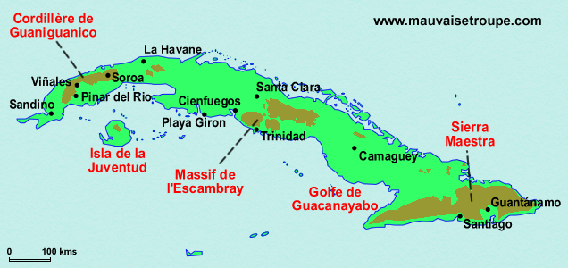

|
|
|
|
Petite encyclopédie de Cuba
|
Carte d'identité |
| Nom officiel |
: |
république de Cuba |
| Nom local |
: |
República de Cuba |
| Superficie |
: |
100860 mm2 (0,2 fois la France) |
| Population |
: |
11 millions d'habitants (0,18 fois la France) |
| Capitale |
: |
La Havane |
| Langues parlées |
: |
espagnol
|
| Monnaie |
: |
Peso Cubain (abbréviation officielle : CUP) |
Situation Géographique |
| A l'entrée du golfe du Mexique, elle est baignée au nord par l'océan Atlantique et au sud par la mer des Caraïbes. A proximité du tropique du Cancer, on trouve Haïti à l'Est, la Jamaïque au Sud-Est, la Flortide au Nord-Est et le Mexique à l'ouest. |
 |
Géographie |
En forme de crocodile, très allongée (1 200 km de long) mais ne dépassant pas 200 km de large, Cuba est la plus grande île des Antilles. Elle comporte plusieurs milllier d'îlots pour la plupat inhabités et dont le plus importante est la Isla de la Juventud (île de la Jeunesse, anciennement île des Pins) dont la superficie dépasse les 2000 km2.
Sans fleuve ni lac important, Cuba possède tout de même quelques 200 petites rivières constituant une importante ressource d'eau potable. Le río Cauto est la plus importante rivière de l'île. C'est également la seule navigable de l'ile. Elle se jette au sud-est dans le golfe de Guacanayabo.
La côte cubaine est longue de près de 6000 km et sont riches de plages.
Cuba est formée de plaines et de bas plateaux favorables à l'élevage et à la culture. Ces plaines sont coupés de quelques reliefs montagneux (seulement un quart de la superficie du pays est couvert de montagnes). Les zones les plus hautes se trouvent aux extrémités et au centre de l'île :
- la Sierra de los Organos, dans la cordillère de Guaniguanico (700 m d'altitude), à l'ouest de La Havane, avec en particulier dans la vallée de Viñales, les mogotes, ces gros rochers qui surgissent de nulle part.
- le massif de l'Escambray dans la province de Sancti Spíritus (1 150 m) et la sierra de Trinidad, au centre, qui descendent doucement dans la plaine vers nord, et tombent plus brutalement vers la côte sud
- et enfin la sierra Maestra, à l'extrême au sud-est du pays, qui possède le point culminant de l'île, le pic Turquino (1 970 m)
|
|  |
Climat |
Le climat est tropical, humide, avec deux saisons
Une saison sèche en hiver, de novembre à avril, avec des température oscillant
entre 22°C (février) et 27°C (juillet et août).
La chaleur y est plus supportable et le ciel plus dégagé.
une saison humide en été, de mai à octobre, avec des pluies courtes mais violentes
et une température un peu plus élevée (27 °C en moyenne).
C'est en particulier en septembre et octobre que les pluies sont les plus abondantes et c'est
aussi pendant cette période que surviennent les cyclones.
|
|